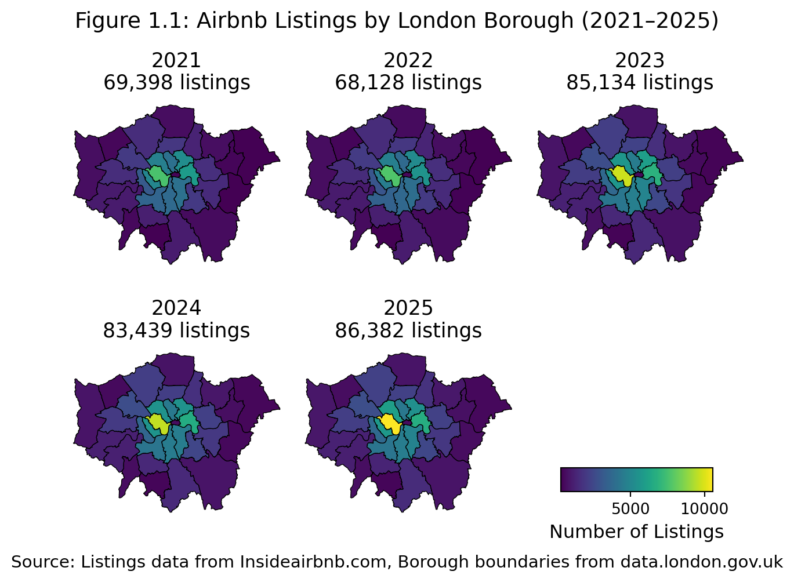
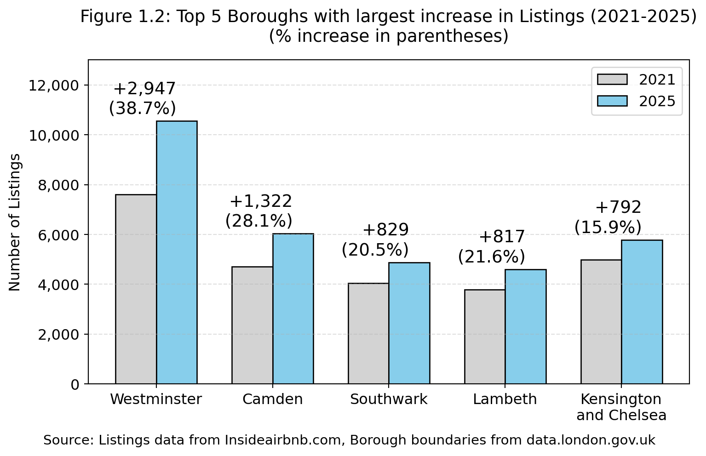
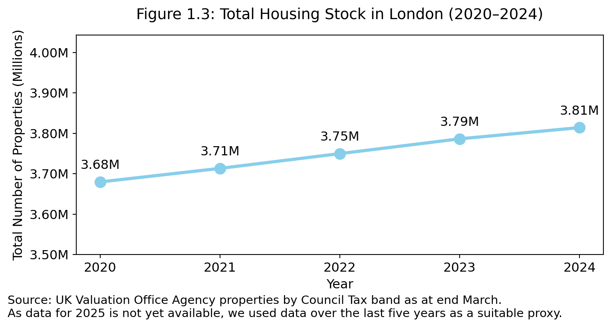
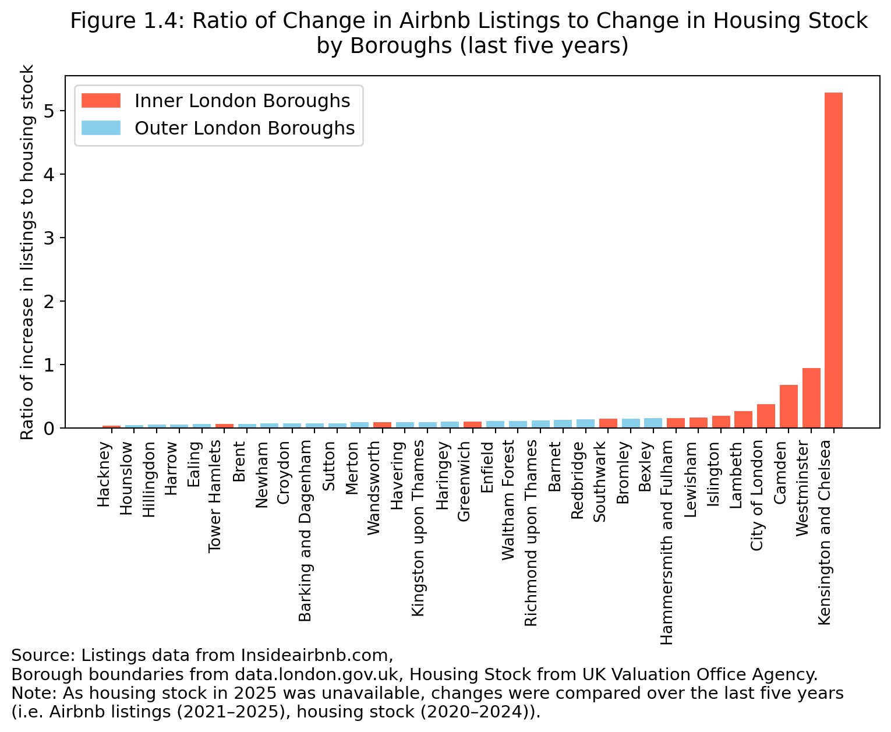
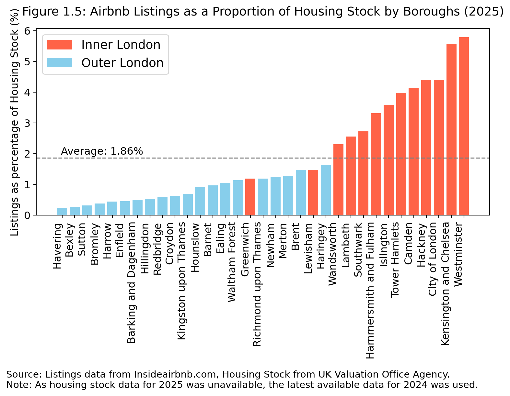
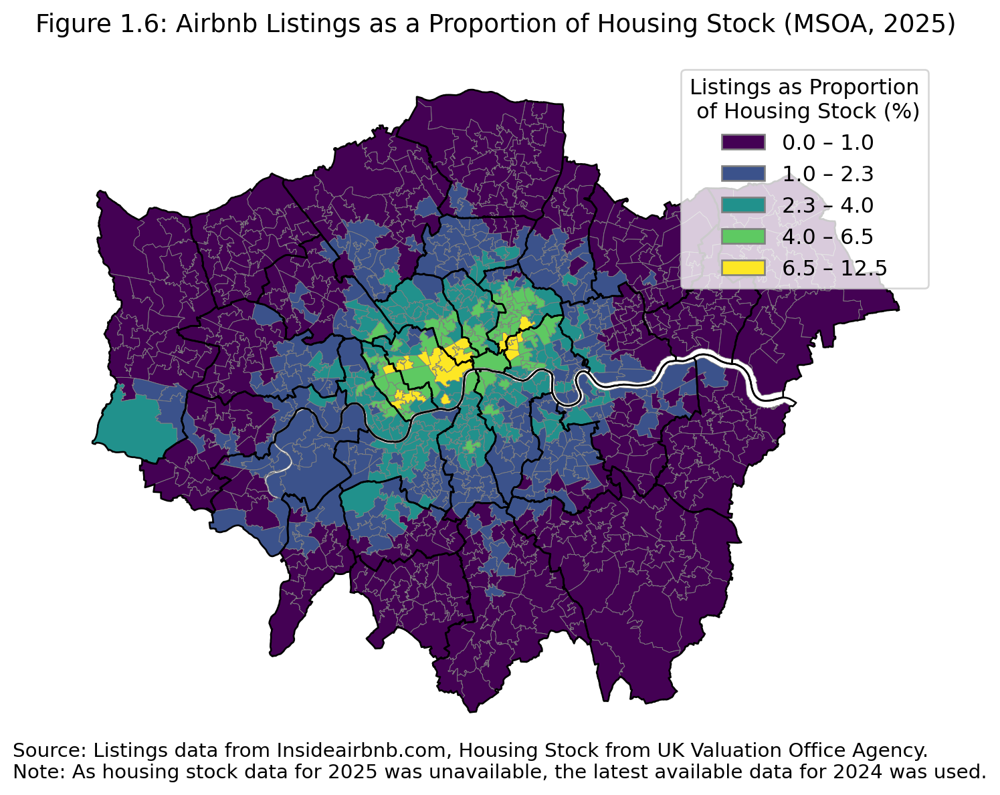
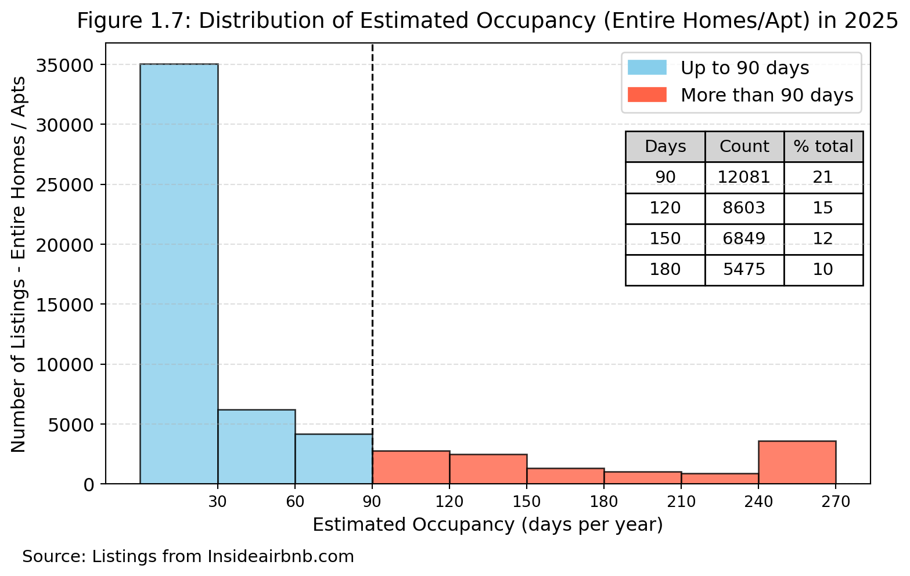
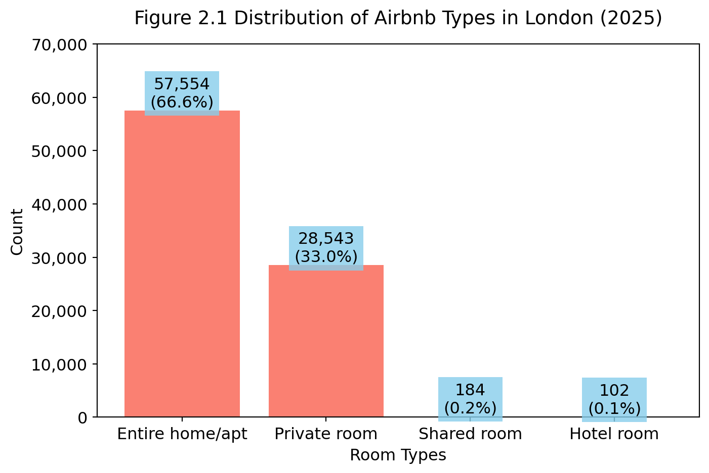
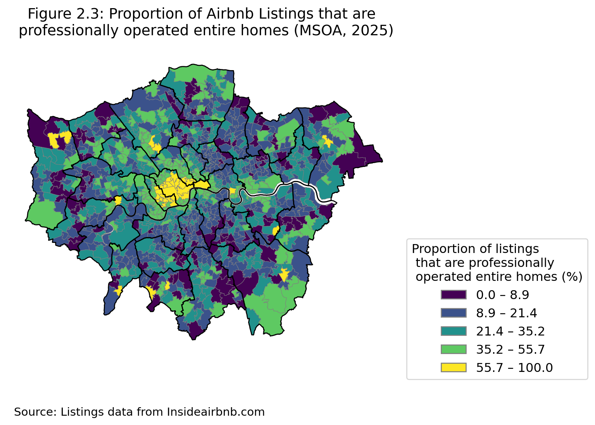
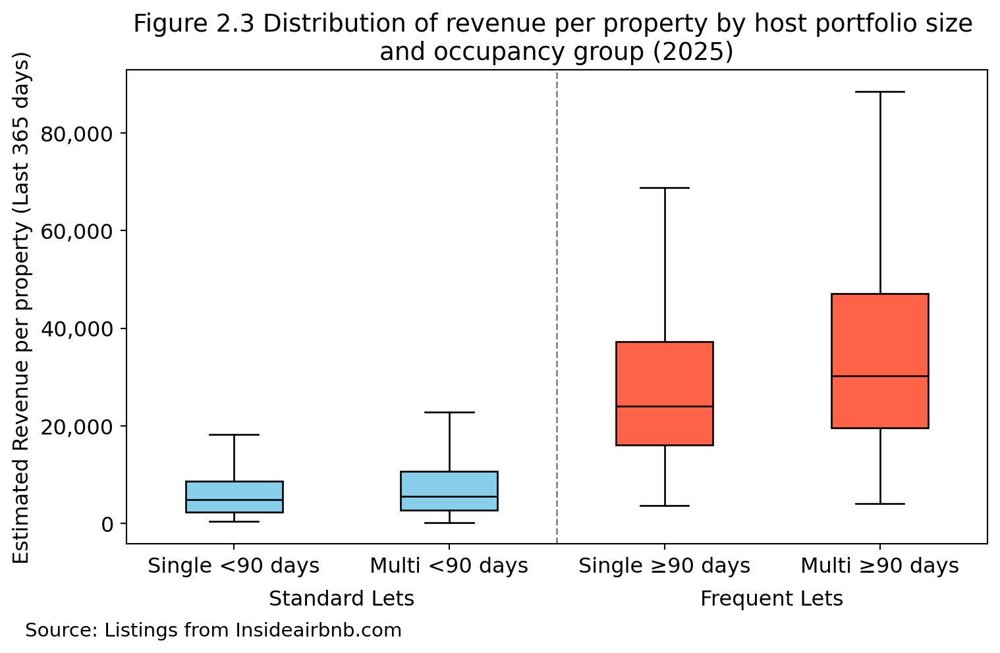

The Pythoneers’ Group Project
Priorities for Feedback
Are there any areas on which you would appreciate more detailed feedback if we’re able to offer it?
Briefing on Airbnb Growth Trends & Policy Implications
Executive Summary
This report provides an analysis of Airbnb activity in London in recent years (2021-2025), with a focus on 2025. Given time-sensitivity amidst the impending election, and a data-poor environment, we utilise appropriate data-driven approaches to provide insight into the following questions:
a. Is Airbnb out of control in London?
b. How many professional landlords are there?
c. How many properties would be affected by the opposition’s proposal?
d. What are the benefits and trade-offs with the opposition’s proposal?
e. What are options to reframe the narrative to one about social mobility and housing opportunity?
Key Findings
(Insert findings in 2 column table)
Recommendations
(Insert recommendations here)
1. Is Airbnb ‘out of control’ in London?
Opposition critics have suggested that the growth and spread of Airbnbs in London has accelerated, with professional landlords rapidly accumulating properties, flouting rental restrictions to make a profit. The increase of short-term lets and its potential to damage the housing supply in London is a concern that the Mayor’s office had raised previously, and is one of the reasons that London’s 90-day limit was introduced. Indeed, the Mayor called for a registration system to be put in place in 2019. This chapter provides a systematic analysis of the situation.
1.1 What is the growth trend in Airbnb listings across London?
From 2021-2025, Airbnb listings across London1 increased by 24% from 69,402 to 86,383 listings. Figure 1.1 summarizes the spatial distribution and growth trends2.
Overall growth was largely driven by a sharp increase in listings from 2022-2023 (↑24%), due to higher host registrations and marketing efforts. Growth rates over the last two years have moderated.
1.2 Which areas saw the fastest growth in Airbnb listings?
- From 2021-2025, central areas of London generally saw larger increases. The Borough of Westminster saw the largest increase in listings Borough of 39.0% (to reach 10,554 listings in 2025 (Figure 1.2).

1.3 How does this compare to changes in the overall housing stock?
- From 2020-2024, total housing stock in London only increased from 3.68M to 3.81M (Figure 1.3, data for 2025 unavailable), with a much slower growth rate of around 3.7%, over the last five years. Amidst robust demand and a tight housing market, the faster increase in properties for short-term rental relative to housing stock could have exacerbated pressures on housing prices and rents (Todd, Musah & Cheshire (2022)).

- Inner London Boroughs (orange bars in Figure 1.4) saw a higher ratio of increases in Airbnb listings compared to increases in housing stock. Kensington and Chelsea experienced listing growth that was 5 times that of housing stock growth and faced the largest impact of listings growth.

1.4 What is the situation at the Borough- and MSOA-levels in 2025? Are issues widespread or localised?
- At the Borough-level (Figure 1.5), the proportion of Airbnb listings compared to the overall housing stock ranged from 0.2% to 5.8%, with Inner London Boroughs having a higher share of listings relative to housing stock.

- At the MSOA-level, it becomes clearer that there are pockets of concentration of listings relative to housing stock in these Boroughs, with up to 1 in 8 homes (12.5%) listed for Airbnb (Figure 1.6). This high proportion could be driving negative sentiments in some parts of London that Airbnb could be out of control.

1.5 How many listings potentially breach the current 90-day limit for rentals?
Since 2015, London planning rules state that entire homes let on platforms such as Airbnb should not be used for short-term letting for more than 90 nights per calendar year, without planning permission obtained. This prevents permanent housing from being converted into de facto holiday accommodation.
In 2025, 57,554 or 67.0% of all listings were for “entire homes / apartments”. Based on occupancy estimates3 , 12,081 entire homes / apartments were used for more than 90 nights per year. This represents more than 2 in 10 of all entire homes listings, and around 1 in 8 of all listings in London that were possibly in breach of this rule.
Notwithstanding the sensitivity of the assumptions in Inside Airbnb’s methodology4, we expect this estimate to be a conservative one, given reported likelihood of multiple listings of the same property, which some owners have used to circumvent the 90 day rule5.

The spatial pattern is consistent with earlier trends. Inner London Boroughs show the highest rates of intense use (i.e >90 days).
Westminster: 27% of entire home listings have occupancy exceeding 90 nights”
Camden: 25%
Islington: 23%
1.6 Taken together, do these trends suggest a problem and what is the impact on communities?
[AS note: just to flag that previous Mayoral press releases may be a good source of high level commentary about the impact, and be quite helpful in the context of ‘advising’ the Mayor now. e.g. https://www.london.gov.uk/mayor-demands-licencing-scheme-prevent-short-term-lets-damaging-housing-supply]
[AS note 2: we could perhaps refer to measures taken in other jurisdictions here and the reasons (basically competition for housing) but we should also talk about the positives i.e. money in Londoners’ pockets for renting out their spare rooms/tourist income etc. https://www.bbc.co.uk/travel/article/20240701-what-does-a-world-without-airbnb-look-like; https://hbr.org/2024/02/what-does-banning-short-term-rentals-really-accomplish ]
2. How many professional landlords are there?
2.1 What is the distribution of Airbnb types in London?

2.2 What is the difference between a professional landlord and a commercial landlord? Does this matter for analysis?
[I wrote the below before I realised that Owen had dont an analysis of this point in his separate doc. I’m leaving it in as some of it may be helpful. I think the below has the possible benefit that it makes the point re business rates, which we may want to come back to as part of our recommendations, and also refers to the details of the question.]
The opposition proposes that “professional” landlords’ properties should be subject to increased council tax. Leaving aside for the moment the question of how that proposal might be implemented and administered [see below…- could refer to recent Budget’s proposals on Council Tax for “mansions”], a separate issue is how the opposition would determine which Airbnb landlords would be classed as “professional”.
Pending receiving clarity from the opposition on that point, in this report a “professional” landlord is defined as one:
whose income from their Airbnb properties is [greater than the median UK/London? income]. This is on the basis that the plain English meaning of the word “professional” is as a counterpart to “amateur”. In this context, “professional” suggests that the landlord could be relying on Airbnb for their living; that is, to provide the income that they would otherwise be earning through employment.
whose properties are residential, rather than commercial. This is based on, first, the opposition’s reference to Council Tax (which is not paid by commercial landlords; instead they pay business rates) and, second, the context for the opposition’s proposal: the letting of three “homes” (including one council-owned property) on Airbnb - the likely argument on the opposition’s part being that letting these homes on Airbnb means that they are not available either for private rental (or council tenants) or sale to buyers on the property market.
2.3 How many hosts have listings for two or more entire properties (homes / apartments)?
occupancy_group <90 days ≥90 days
host_size_group
1 40.000695 7.099420
2 5.940508 2.097161
3-10 12.176391 5.064809
11-100 16.539250 6.301908
100+ 4.234284 0.545575
An analysis of host listings6 shows that a small number of hosts are responsible for a disproportionately large number of listings (Figure 2.2). Previous studies have found that such “multi-listing hosts” are significant drivers of increase in rent and Airbnb’s profit in London7.
27,108 (85%) hosts own only 1 entire property (i.e. single-listing hosts), and they are responsible for 47% of listings.
4,966 (15%) hosts own two or more properties (i.e. multi-listing hosts), and they disproportionately make up 53% of listings.
A small number, 15 (0.05%) hosts, own over 100 properties but still make up 5% of the total number of entire homes available.
Out of the total entire home / apartment listings, a larger proportion of properties belonging to multi-listings hosts were let out for 90 or more days (14%), compared to properties belonging to single-listing hosts (7%).
2.4 What is the median income from renting out entire homes / apartments for single-listing and multi-listing hosts? How does this compare with median incomes for working persons in London?
After excluding rows with 0 or NaN revenue: 28,898
4,858 24,000 5,600 30,300Based on estimated revenues from Inside Airbnb data8,
The median single-listing host renting out their home for less than 90 days earned £4,858, while the median multi-listing host earned £5,600 a year per property.
This rises much further when we look at frequent hosts (i.e. occupancy ≥90 days). The median single-listing host earned £30,300, while multi-listing hosts earned 30,300 a year per property.

The London Datastore reported that the mean income in London for 2022-2023 was £59,000 and the median was £34,100. [expand source?]
2.5 What is the profile of these hosts ?
np.int64(2472)
A large majority of hosts renting out entire rooms/apts in London, whether they rent out one or more than 100, are based in the UK.
However, {python}df_100plus_grouped_len owners between them own {python}df_100plus_grouped['number_of_properties'].sum() entire homes/apartments that they let on Airbnb. The host with the most properties is a company based in Dubai; three other host names suggest that they are companies rather than individuals. [AS note: possible link to pros/cons of Council Tax approach vs business rates approach: these hosts may be paying a huge amount of tax already if they are properly registered for business rates already - this could be entirely lawful (and be compliant with planning permission too).]
3. How many properties would be affected by the opposition’s proposal?
The opposition is proposing that “professional” landlords be required to register their properties and pay higher Council Tax rates.
On the basis set out above that any individual owning two or more properties is a “professional” landlord, this would mean that {python}len(propmorethan1UK) properties would need to be registered.
If, instead, the threshold is set at \5 properties, then {python}len(df_5ormore) would require registration.
4. What are the likely pros and cons of the opposition’s proposal (for the Mayor, for residents, and for the city)?
References
Footnotes
Data compiled from Inside Airbnb (http://insideairbnb.com) which uses public information on the rental outlets available for booking at specific months in each year. While data owners have exercised care with the processing cleaning and analysis, this dataset is the best publicly available estimate of Airbnb listings. We further process the data to remove listings with duplicate IDs, or more than six null fields, which typically reflects the fact that these entries have no reviews or incomplete information. ↩︎
Given longitudinal analysis limitations, data does not include listings which dropped off from year to year.↩︎
Occupancy estimates are obtained from Inside Airbnb data. First, a review rate is used to compute reviews to estimated bookings. Thereafter, the average length of stay for London was multiplied by the estimated bookings for each listing giving the occupancy rate (out of 365 days). To estimate potential breaches, we look at the subset of listings that are “entire homes / apartments”, and the occupancy rate, which estimates how many nights the listing was booked in the last 365 days, providing a useful proxy for annual use, where raw daily calendar data are unavailable.↩︎
The occupancy model assumed (a) a review rate of 50% and (b) average length of stay of 3.1 days for London. This is conservative given that Airbnb previously cited an average review rate of 78%, and, community forums have cited a range of 33% and 85% for various properties.↩︎
BBC journalists found about 1,300 listings had reused identical images - such as the same furniture, rooms and decor - from other supposedly unique listing. https://www.bbc.co.uk/news/articles/cvg96rz9061o↩︎
We assume that hosts either own the entire home / apartment that they list, or have written permission from owners to list on Airbnb.↩︎
Todd et al. and Cox and Slee BT: Need to cite this properly and reference the key finding.↩︎
Owen to insert a footnote to flesh out assumptions for data cleaning and compilation.↩︎